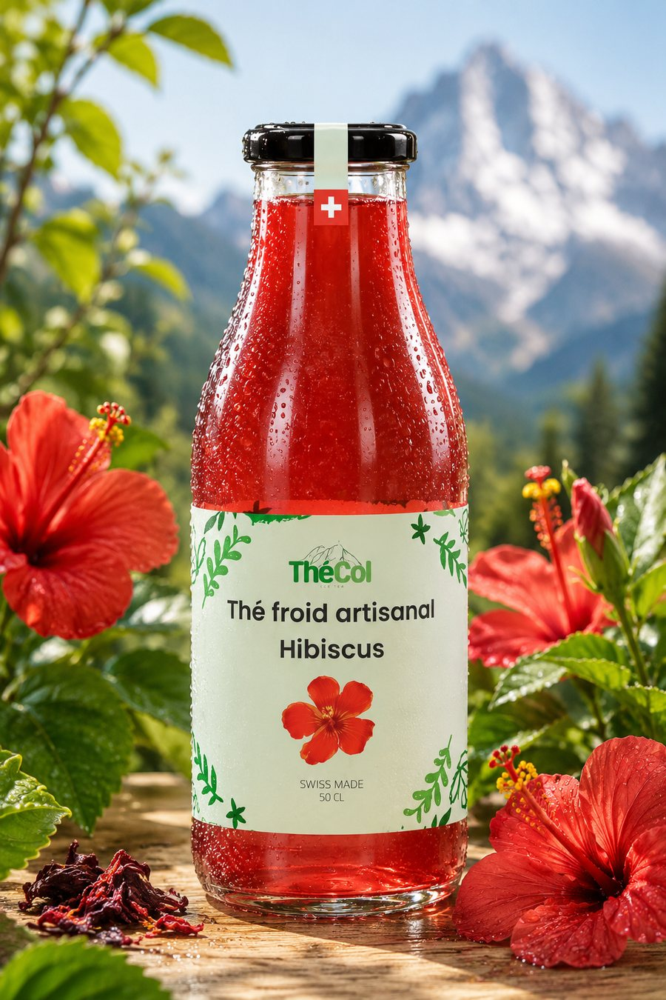

Hibiscus
La fleur qui voit rouge.
Des fleurs d'hibiscus infusées avec soin donnent à ce thé froid sa robe rouge éclatante et ses notes florales légèrement acidulées. Servi bien frais, c'est le rafraîchissement qui ne passe pas inaperçu.
Comme toute la gamme, il est brassé artisanalement en petites séries à Fribourg — sans arômes, ni extraits, ni concentrés, ni colorants, ni conservateurs. Simplement goûtu, rafraîchissant et pas trop sucré.
Bouteille fermée, il se conserve 6 mois à l'abri de la lumière et de la chaleur, sans frigo. Une fois ouverte, gardez-la au frais — et finissez-la sans tarder !
Expédition en 3 à 5 jours, ou disponible chez nos distributeurs
Deux parcours distincts : « Ajouter au panier » prépare une demande par e-mail locale — aucun paiement n'est encaissé sur ce site, le bouton « Envoyer la demande par e-mail » ouvrira votre messagerie avec un message prérempli à commande@thecol.ch, et nous vous confirmerons disponibilité et modalités par retour de mail. Pour acheter et payer en ligne (carte ou PayPal, paiement sécurisé), rendez-vous sur notre boutique Odoo — c'est la référence de paiement.